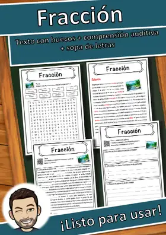
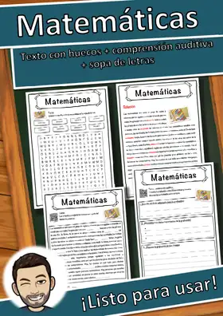
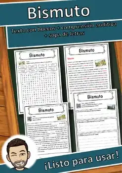
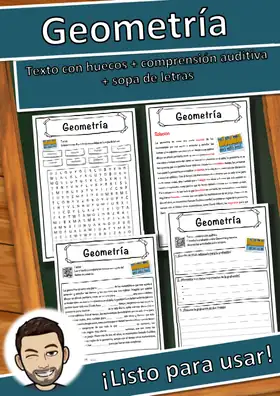
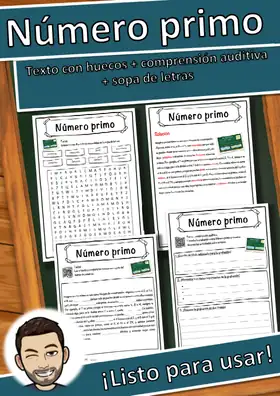

Fichas de Matemáticas
73 fichas de Matemáticas en español para imprimir (PDF), sin preparación y con solucionario: comprensión lectora, búsquedas del tesoro y más, filtrables por grado.
73 recursos
Grado

«El laboratorio de pan de jengibre: Geometría entre moldes, medidas y casas» – Búsqueda del tesoro de lectura

Juego de roles multiplicación y división | Panadería de Navidad Grado 2

«Aventura de conteo con castañas» – Búsqueda del tesoro de lectura

Fracción – Ficha: texto con huecos, comprensión auditiva y sopa de letras

Matemáticas – Ficha: texto con huecos, comprensión auditiva y sopa de letras

Número – Ficha de lectura: texto con huecos, comprensión auditiva y sopa de letras

Bismuto – Ficha de lectura: texto con huecos, comprensión auditiva y sopa de letras

Geometría – Ficha: texto con huecos, comprensión auditiva y sopa de letras

Número primo – Ficha: texto con huecos, comprensión auditiva y sopa de letras
Villarreal
Villarreal – Ficha: texto con huecos, comprensión auditiva y sopa de letras
Calviá
Calviá – Ficha: texto con huecos, comprensión auditiva y sopa de letras
San Bartolomé de Tirajana
San Bartolomé de Tirajana – Ficha: texto con huecos, audio y sopa de letras
Tres Cantos
Tres Cantos – Ficha: texto con huecos, comprensión auditiva y sopa de letras
Elda
Elda – Ficha: texto con huecos, comprensión auditiva y sopa de letras
Huesca
Huesca – Ficha: texto con huecos, comprensión auditiva y sopa de letras
Linares
Linares – Ficha: texto con huecos, comprensión auditiva y sopa de letras
Pinto
Pinto – Ficha: texto con huecos, comprensión auditiva y sopa de letras
Gandía
Gandía – Ficha: texto con huecos, comprensión auditiva y sopa de letras
Orihuela
Orihuela – Ficha: texto con huecos, comprensión auditiva y sopa de letras
Las Palmas de Gran Canaria
Las Palmas de Gran Canaria – Ficha: texto con huecos, audio y sopa de letras
Fuengirola
Fuengirola – Ficha: texto con huecos, comprensión auditiva y sopa de letras
Valdemoro
Valdemoro – Ficha: texto con huecos, comprensión auditiva y sopa de letras
Vélez-Málaga
Vélez-Málaga – Ficha: texto con huecos, comprensión auditiva y sopa de letras
Toledo
Toledo – Ficha: texto con huecos, comprensión auditiva y sopa de letras
Arona
Arona – Ficha: texto con huecos, comprensión auditiva y sopa de letras
Pozuelo de Alarcón
Pozuelo de Alarcón – Ficha: texto con huecos, audio y sopa de letras
Chiclana de la Frontera
Chiclana de la Frontera – Ficha: texto con huecos, audio y sopa de letras
El Ejido
El Ejido – Ficha: texto con huecos, comprensión auditiva y sopa de letras
Guadalajara
Guadalajara – Ficha: texto con huecos, comprensión auditiva y sopa de letras
San Fernando
San Fernando – Ficha: texto con huecos, comprensión auditiva y sopa de letras
Mijas
Mijas – Ficha: texto con huecos, comprensión auditiva y sopa de letras
Cáceres
Cáceres – Ficha: texto con huecos, comprensión auditiva y sopa de letras
San Sebastián de los Reyes
San Sebastián de los Reyes – Ficha: texto con huecos, audio y sopa de letras
Salamanca
Salamanca – Ficha: texto con huecos, comprensión auditiva y sopa de letras
Torrevieja
Torrevieja – Ficha: texto con huecos, comprensión auditiva y sopa de letras
Lorca
Lorca – Ficha: texto con huecos, comprensión auditiva y sopa de letras
Las Rozas de Madrid
Las Rozas de Madrid – Ficha: texto con huecos, audio y sopa de letras
Rivas-Vaciamadrid
Rivas-Vaciamadrid – Ficha: texto con huecos, audio y sopa de letras
Telde
Telde – Ficha: texto con huecos, comprensión auditiva y sopa de letras
Cádiz
Cádiz – Ficha: texto con huecos, comprensión auditiva y sopa de letras
Jaén
Jaén – Ficha: texto con huecos, comprensión auditiva y sopa de letras
Alcobendas
Alcobendas – Ficha: texto con huecos, comprensión auditiva y sopa de letras
León
León – Ficha: texto con huecos, comprensión auditiva y sopa de letras
Algeciras
Algeciras – Ficha: texto con huecos, comprensión auditiva y sopa de letras
Dos Hermanas
Dos Hermanas – Ficha: texto con huecos, comprensión auditiva y sopa de letras
Huelva
Huelva – Ficha: texto con huecos, comprensión auditiva y sopa de letras
Torrejón de Ardoz
Torrejón de Ardoz – Ficha: texto con huecos, audio y sopa de letras
Badajoz
Badajoz – Ficha: texto con huecos, comprensión auditiva y sopa de letras
No se encontraron recursos. Prueba con otra palabra o con otro filtro.